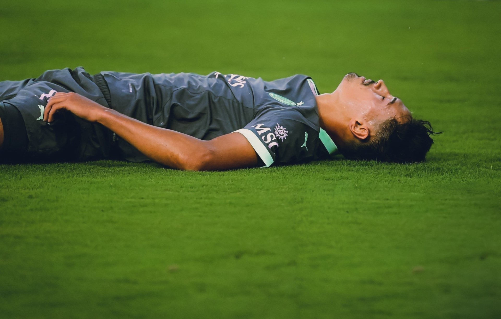
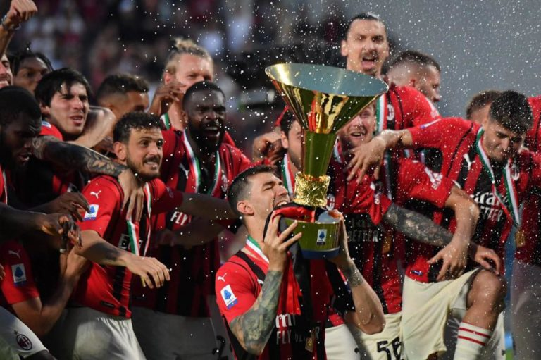

AC Milan is typically considered to be one of the greatest European teams in the history of soccer. However since 2010 the team has failed to live up to their excellent history and have only won two major trophies since. There seemed to be an upward trend between 2020-2022 but that has since faded as the team currently sits in 7th and it seems that fighting for the title, or even Champions League qualification, something that is a large part of their revenue are at serious risk for this season and could lead to the club falling further in future seasons. This has lead to more and more fans to be angered by the way the club has been over the last couple seasons and many of them have their own unique reasons on who to blame for the current shortcomings of the team.
Some people believe that it is on solely the manager/coach for why certain players aren't consistently playing to their level. not only that, some people are questioning his tactial set up for the team and wonder if he's truly the right man to take Milan back to where they belong. They also blame the players as some are not playing the the levels they've shown in previous seasons and some were just never quality enough to begin with according to some fans. Lastly there are a large group that blame the management group specifically with key figures such as Gerry Cardinale, Geoffrey Moncada, Furlani, and Zlatan Ibrahimovic all being questioned on their work and dedication to the AC Milan Project.
However, As bleak as things may look for Milan now, the fans must remember that hope cannot be lost. there is a way to save this sinking ship and that despite things looking bleak there is a way to restablilize this club and bring them back to where they belong at the top of Europe. I will explain what the problems and solutions in the fields of:
Hopefully Milan take steps forward to benifit the club and listen to the fans to get the club back where it belongs!
Milan main Page link 